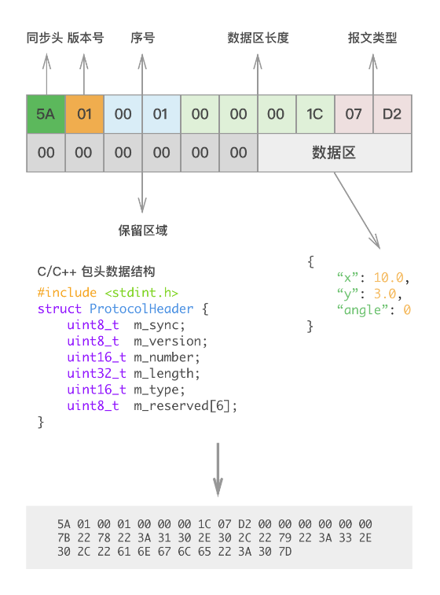

Wiki table of contents
发布说明（软件下载）
第一章：关于本手册
第二章：安装环境要求
第三章：首页
第四章：设置
第五章：其他
附录 A - 属性说明
附录 B - 其他实施方法
Robod(守护程序)
Robod 发布说明
Robod 网络接口说明文档
Robod(SRC5000) 网络接口说明文档
问题分析
注意事项
版权声明
header-v2
SEER Robotics
Robod 网络接口说明文档
Last updated: Dec 02
Log In or Sign Up
Robod 网络接口说明文档
报文格式
指令返回格式
关闭操作系统
关闭 Robokit
启动Robokit
重启操作系统
重启Robokit
配置robod
查询Robokit 运行状态
下载机器人备份文件
连接无线Wi-Fi
配置无线网卡IP
查询无线网卡信息
查询所有可连接 Wi-Fi列表
配置机器人的热点参数
启动机器人热点
停止机器人热点
修复机器人热点
查询热点状态
查询Robod版本
下载调试文件
查询固件id
启用/禁用网卡
查询有线网卡信息
配置有线网卡网卡IP
获取音频驱动列表及音量大小
调整音量大小
查询指定目录文件列表
上传文件
下载文件
删除文件
查询可下载所有目录名称
更新控制器
删除机器人的备份文件
激活机器人
获取机器人备份压缩文件列表
导出Robokit 资源文件
导入Robokit资源文件
获取 rbk 警告和错误信息
定时自动连接以太网
以静态IP连接指定无线Wi-Fi
获取时区列表
设置时区
设置日期时间(yyyy-MM-dd hh:mm:ss)
获取当前时间(yyyy-MM-dd hh:mm:ss:zzz)
iwconfig命令
导入 .pxf 证书
获取所有网卡信息
Robod 网络接口说明文档
Modified December 2
报文格式
默认端口: 19208

指令返回格式
字段名
类型
描述
可缺省
ret_code
number
API错误码
否
err_msg
string
错误信息
否
关闭操作系统
请求
Comments
Go to the first comment